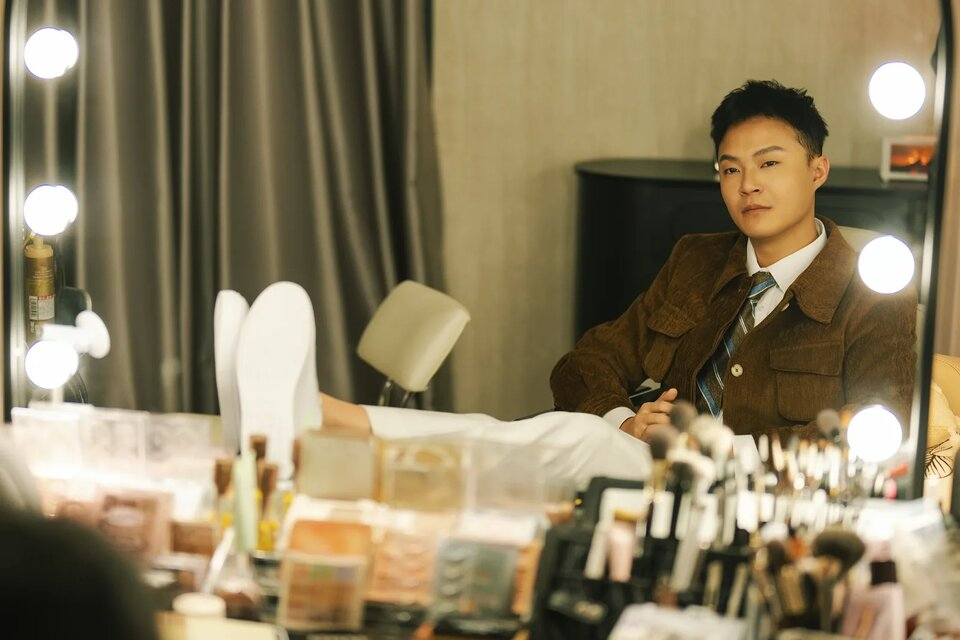

跟著影片畫了好幾次，眉毛還是一邊高一邊低。彩妝品買了不少，每天用的還是那幾樣。可以先從你現在的程度，以及最想學會的部分，找到適合的課程。
| 你現在的需求 | 可以了解的課程 |
|---|---|
| 完全不會化妝，想從基本步驟開始 | 一對一彩妝教學（初級） |
| 已有基礎，想加強底妝質感與眼妝層次 | 一對一彩妝教學（進階） |
| 只想學畫眉，或想討論特定彩妝步驟 | 一對一單項教學，時間與費用在預約時確認 |
| 已有化妝習慣，想參加小班課程 | 彩妝美學課，可單人或兩人同行報名 |
| 想同時學習男士自然妝容與髮型整理 | 型男妝髮課程 |
不確定自己的需求也沒關係，透過 LINE 官方帳號說說平常的化妝習慣和想改善的地方，我們會依你的需求給建議。
可以。B.room 一對一彩妝教學的初級課程適合零基礎學員，從自然底妝、修眉畫眉、基礎眼妝與刷具使用開始，並依膚色與冷暖方向提供選色建議。
已有基本化妝能力，想提升底妝質感或眼妝層次，可以了解一對一進階課程。
可以。B.room 可單獨安排一對一畫眉教學，時間與費用在預約時依教學內容確認。
如果想加強其他彩妝步驟，也可以先說明需求，討論適合的教學內容。
一對一彩妝教學的初級與進階方案，各安排兩堂，每堂 2 小時，共 4 小時。教學內容會依你的程度與想加強的項目安排。
上課時，老師先示範半邊臉，另一半由你自己練習。遇到比較不擅長的地方，可以多練幾次，老師會協助調整。
第一堂依程度進行示範與練習。回家後可以把練習的妝容拍下來傳給老師；第二堂會參考照片，複習需要加強的地方，再依學習狀況繼續教。想讓技巧越來越熟悉，仍需要課後持續練習。
兩堂課的間隔依時間安排，建議在兩週內完成。第二堂的時間於第一堂課結束後預約。
你可以帶平常使用的彩妝品來，請老師協助整理分類，並討論哪些適合自己的妝容需求。
彩妝美學課適合已有化妝習慣、想提升日常妝容技巧的人。一堂 3 小時，每梯最多 8 人，可以一個人報名，也可以和朋友兩人同行。
同樣的彩妝品，可以練習怎麼畫出更適合自己的妝容。
上課請素顏到場，並自備平常使用的彩妝品和工具。如有敏感肌、過敏或正在接受皮膚治療，請於報名時告知。
剛開始學化妝，可以先了解一對一初級課程，從基本步驟練起。
一對一初級、進階與單項教學採預約制，上課時間於預約時確認。
彩妝美學課與型男妝髮課程的開課日期，列在上方的課程費用表。彩妝美學課還沒公布下一梯時，可以先加入 LINE 官方帳號留下名字，新梯次公布後會通知。
課程在 B.room 台中勤美門市進行，地址為臺中市西區臺灣大道二段 300 號 A 棟 6F-1。
可以。如果想學畫眉、自然底妝，或加強某個彩妝步驟，可以詢問一對一彩妝教學，依需求討論教學內容。
如果希望同時學習男士自然妝容、髮型快速整理及髮品選擇與使用，可以了解型男妝髮課程。
Makeup Lessons